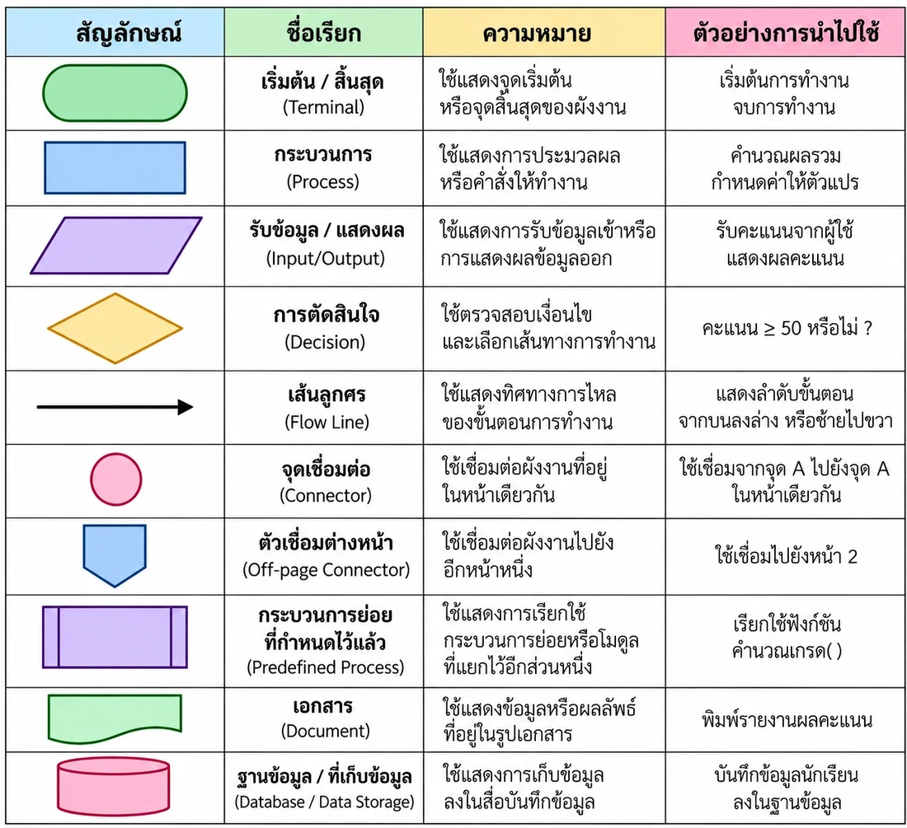

🎯 จุดประสงค์การเรียนรู้
- อธิบายลักษณะของแนวคิดเชิงนามธรรมและนำไปใช้แยกสาระสำคัญของปัญหาได้
- อธิบายและเขียนอัลกอริทึมด้วยภาษาธรรมชาติ รหัสลำลอง และผังงานได้
- ออกแบบอัลกอริทึมเพื่อแก้ปัญหาในชีวิตประจำวันและถ่ายทอดได้อย่างถูกต้อง
1 แนวคิดเชิงนามธรรม
แนวคิดเชิงนามธรรม (Abstraction) เป็นองค์ประกอบหนึ่งของ แนวคิดเชิงคำนวณ คือการประเมินความสำคัญของรายละเอียดปัญหา แล้ว แยกส่วนที่เป็นสาระสำคัญ ออกจากส่วนที่ไม่ใช่สาระสำคัญ และพิจารณา จุดที่เหมือนกัน ของปัญหา เพื่อหาแนวคิดรวบยอด
ประโยชน์
ช่วยให้เข้าใจปัญหาและมองเห็นปัญหาได้ชัดเจนขึ้น และเลือกวิธีแก้ปัญหาได้มีประสิทธิภาพ
ตัวอย่างคณิตศาสตร์
รูปคลี่ของทรงกระบอก ประกอบด้วยวงกลม 2 รูป และสี่เหลี่ยมผืนผ้า 1 รูป
ตัวอย่างวิทยาศาสตร์
วัฏจักรของน้ำ เลือกเฉพาะ ระเหย → ควบแน่น → ตกเป็นฝน → ซึมลงดิน
ตัวอย่างการนำเสนอ
ถ่ายทอดเฉพาะสาระสำคัญ ทำให้ถูกต้อง ชัดเจน และตรงประเด็น
และตัวอย่างปูหญ้า สนาม 10 × 5 ม. หญ้าผืนละ 50 × 50 ซม. สาระสำคัญคือขนาดสนามกับขนาดหญ้า (ใช้หญ้า 200 ผืน)
2 อัลกอริทึมเบื้องต้น
อัลกอริทึม (Algorithm) คือ ระเบียบวิธีหรือขั้นตอนวิธี ที่ใช้แก้ปัญหา อธิบายเป็นขั้นตอนที่ชัดเจน ใช้แก้ปัญหาทั่วไปที่พบในชีวิตประจำวัน ไม่ใช่เฉพาะกรณีใดกรณีหนึ่ง และเขียนได้ 3 รูปแบบ
ภาษาธรรมชาติ
บรรยายขั้นตอนด้วยภาษามนุษย์
รหัสลำลอง (Pseudo Code)
ลำลองคำสั่งด้วยประโยคภาษาอังกฤษหรือไทย
ผังงาน (Flowchart)
ใช้ภาพสัญลักษณ์และลูกศร
เลือกอัลกอริทึมที่มีประสิทธิภาพ เช่น การต่อโมเดลตัวต่อ 2 วิธี ได้ผลเหมือนกัน
- วิธีที่ 1 ลองผิดลองถูก ขั้นตอนน้อยกว่า
- วิธีที่ 2 เปิดคู่มือแล้วต่อตามขั้นตอน ขั้นตอนมากกว่า แต่ต่อได้ถูกต้อง จึงมีประสิทธิภาพมากกว่า
3 ภาษาคอมพิวเตอร์และภาษาธรรมชาติ
ภาษาธรรมชาติ คือภาษาที่มนุษย์ใช้สื่อสารกันตามเชื้อชาติ เช่น ไทย อังกฤษ จีน แต่คอมพิวเตอร์ไม่เข้าใจความหมายและไวยากรณ์ของภาษาธรรมชาติ จึงต้องมี ภาษาคอมพิวเตอร์ ซึ่งเป็นภาษาประดิษฐ์ (Artificial Language) ที่โปรแกรมเมอร์เขียนขึ้นเพื่อสั่งงาน
ภาษาคอมพิวเตอร์แบ่งเป็น 5 ยุค ได้แก่ ภาษาเครื่อง → ภาษาแอสเซมบลี → ภาษาชั้นสูง → ภาษาขั้นสูงมาก → ภาษาธรรมชาติ
ระดับต่ำ
เช่น ภาษาเครื่อง แอสเซมบลี ควบคุมฮาร์ดแวร์ได้ตรงและรวดเร็ว แต่มนุษย์เข้าใจยาก
ระดับกลาง
มีโครงสร้าง นำข้อดีของระดับต่ำและสูงมารวมกัน นิยมใช้แพร่หลาย
ระดับสูง
เข้าใจง่าย ใกล้ภาษาอังกฤษ แล้วถูกแปลงเป็นภาษาเครื่องให้คอมพิวเตอร์ทำงาน
4 การเขียนอัลกอริทึมด้วยรหัสลำลอง
รหัสลำลอง (Pseudo Code) คือรูปแบบภาษาที่มีโครงสร้างชัดเจน กระชับ ใช้อธิบายขั้นตอนของอัลกอริทึม โดยไม่ขึ้นกับภาษาคอมพิวเตอร์ภาษาใด และแปลงเป็นภาษาคอมพิวเตอร์ได้ง่าย แต่ ไม่ใช่ภาษาโปรแกรม จึงสั่งให้คอมพิวเตอร์ทำงานจริงไม่ได้
หลักเกณฑ์การเขียน
- ใช้คำสั่งสั้น กระชับ เข้าใจง่าย เช่น START = เริ่มต้น, STOP = สิ้นสุด
- มีหมายเลขลำดับขั้นตอนชัดเจน และไม่จำเป็นต้องมีเครื่องหมายวรรคตอน
- ไม่ขึ้นกับภาษาคอมพิวเตอร์ภาษาใดภาษาหนึ่ง
- 1 บรรทัด มี 1 คำสั่ง เขียนจากบนลงล่าง มีจุดสิ้นสุดจุดเดียว
เริ่มต้น/สิ้นสุด
START, STOP, BEGIN, END
รับข้อมูล
READ, GET, INPUT
แสดงผล
WRITE, DISPLAY, SHOW, PRINT, OUTPUT
ประโยชน์: วางโครงร่างกระบวนการ เป็นต้นแบบทบทวนและแก้ไขโปรแกรม และกำหนดงานให้โปรแกรมเมอร์นำไปพัฒนา
5 การเขียนอัลกอริทึมด้วยผังงาน
ผังงาน (Flowchart) คือการใช้ ภาพสัญลักษณ์ แสดงลำดับขั้นตอนการทำงานของอัลกอริทึม ตั้งแต่เริ่มต้นจนได้ผลลัพธ์ เขียนจากบนลงล่าง หรือซ้ายไปขวา และต้องมี หัวลูกศร บอกทิศทาง

รูปแบบผังงาน 3 แบบ
- แบบเรียงลำดับ (Sequence) ทำงานเรียงจากบนลงล่าง ง่ายที่สุด ไม่มีทางเลือกหรือการทำซ้ำ
- แบบเลือกกระทำ/เงื่อนไข (Selection) เปรียบเทียบข้อมูล ถ้าจริงทำอย่างหนึ่ง ถ้าเท็จทำอีกอย่าง
- แบบทำซ้ำ (Loop) ทำกระบวนการซ้ำหลายครั้ง ขึ้นกับเงื่อนไขที่กำหนด
6 ตัวอย่างอัลกอริทึม 3 รูปแบบ
ตัวอย่างที่ 1 หาพื้นที่สี่เหลี่ยมผืนผ้า (พื้นที่ = กว้าง × ยาว)
INPUT width
INPUT length
COMPUTE area = width * length
OUTPUT area
STOP
ตัวอย่างที่ 2 ตรวจผลการเรียน คะแนนเต็ม 100 ได้ตั้งแต่ 50 ขึ้นไป แสดง "สอบผ่าน" ไม่ถึง 50 แสดง "สอบไม่ผ่าน" (ใช้ผังงานแบบเลือกกระทำ)
INPUT score
IF score >= 50 THEN OUTPUT "สอบผ่าน"
ELSE OUTPUT "สอบไม่ผ่าน"
STOP
ตัวอย่างที่ 3 สูตรคูณแม่ 2 (ใช้ผังงานแบบทำซ้ำ) เริ่มที่ 1 คูณ 2 แสดงผล แล้วบวกเพิ่มทีละ 1 ทำซ้ำจนไม่เกิน 12
REPEAT: result = 2 * counter → OUTPUT result → counter = counter + 1
ทำซ้ำเมื่อ counter <= 12
📌 สรุปท้ายหน่วย
- แนวคิดเชิงนามธรรม คือการคัดแยกสาระสำคัญออกจากรายละเอียดปลีกย่อย ช่วยให้เข้าใจปัญหาชัดเจนขึ้น
- อัลกอริทึม คือขั้นตอนวิธีแก้ปัญหาอย่างเป็นระบบ ควรเลือกวิธีที่มีประสิทธิภาพที่สุด
- เขียนได้ 3 รูปแบบ คือ ภาษาธรรมชาติ รหัสลำลอง (Pseudo Code) และผังงาน (Flowchart)
- ผังงานมี 3 แบบ คือ เรียงลำดับ เลือกกระทำ/เงื่อนไข และทำซ้ำ
- คอมพิวเตอร์ไม่เข้าใจภาษาธรรมชาติ จึงต้องใช้ภาษาคอมพิวเตอร์ ซึ่งมี 5 ยุค